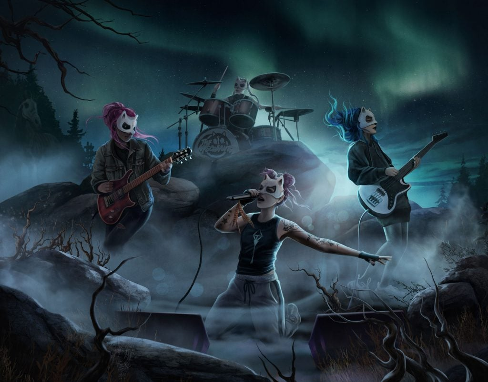
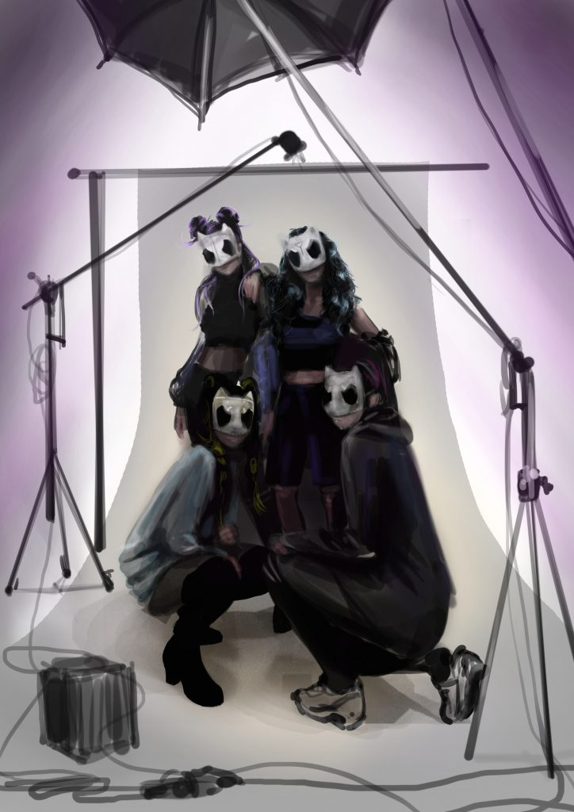
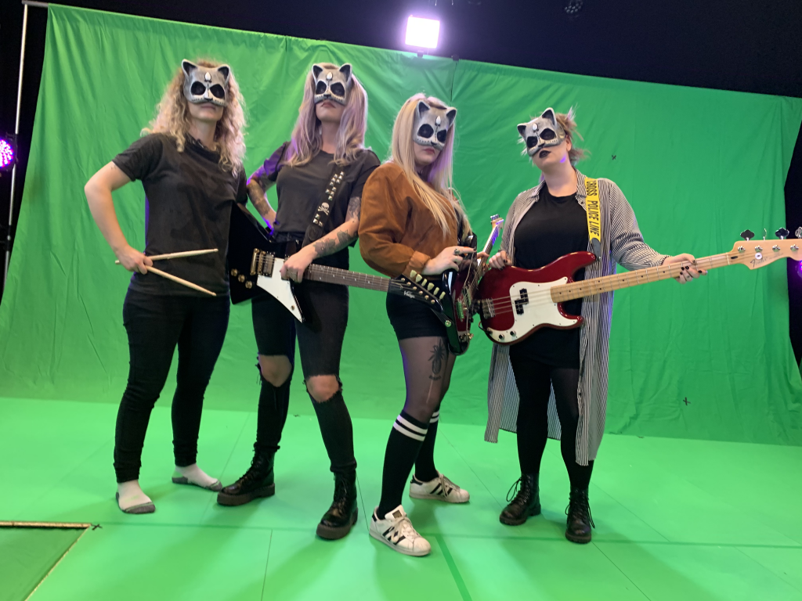

If you’ve been playing Star Stable Online for a while, you may have noticed The Miscreants posters on walls around the world. For a long time, these were just a hint of a mysterious band in Jorvik. Since the summer party 2019 you don’t have to wonder what they sound like.

Four girls, roaring guitars, heavy drums and a badass attitude – that’s The Miscreants, the loudest band on Jorvik. When they were just in their early teens, the band started writing and producing their own music independently, shaking up the rock scene with pure girl power.
Inspired by a mysterious looking mask they found in a vintage store, the girls came up with their name and mascot The Miscreant and her horse Styx. Leaving their real identities in the dark, The Miscreants only appear in the form of this mythical figure, representing what they stand for – free spirits who aren’t afraid of breaking the rules and stirring up trouble for justice.
With their music, The Miscreants want to lead change and inspire girls to follow their dreams and rebel against society’s rules and norms.

Who are the musicians behind the in-game band?
As kick-ass as The Miscreants are in-game, the real life band producing and recording the tracks are quite their equals. The band Browsing Collection comes from Skövde, a small town in Sweden and have been playing together as a band for since their early teens. Star Stable’s Head of music, Jimmy Wahlsteen, scouted them to give the band The Miscreants an authentic sound, and as a bonus the talented band could just as well have been the original inspiration for The Miscreants. Not only do they compose, record and produce their own music, they also produce their own videos – a do what you want kind of attitude we find very inspiring.
